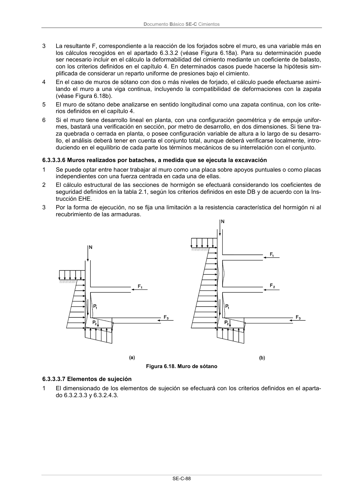

DB-SE-C Cimientos · edición 2019-12-20 · capa oficial
Documento DB-SE-C-oficial · SHA-256 del PDF a71133f4b0dca253e45ea3071c70f2a512354bcc5cd841bf89b1a502f567ac5e
Copia fiel del PDF fuente · Fuente oficial
Ficha de la disposición en la fuente oficial
Formatos: JSON del segmento · Markdown
6.3.3.3.5 Muros de sótano 1 Estos muros están arriostrados transversalmente por los forjados y no trabajan en voladizo. La res- tricción en los movimientos transversales provocada por los forjados hace que frecuentemente no puedan producirse las deformaciones necesarias para alcanzar las condiciones de empuje activo. En el apartado 6.2 se definen los empujes del terreno a considerar en este tipo de muros. 2 En el caso de muros de sótano, a las acciones hay que añadir las verticales de la solicitación de los forjados intermedios y de cabeza, si existen, y la compresión aportada directa o indirectamente por los soportes o muros de carga del edificio que arranquen de ese mismo punto. Para el cálculo de la situación definitiva, podrá suponerse que los empujes horizontales se equilibran contra los pisos, tanto forjado o forjados como solera, en la medida necesaria para minimizar el fallo por deslizamien- to. Documento Básico SE-C Cimientos SE-C-88 3 La resultante F, correspondiente a la reacción de los forjados sobre el muro, es una variable más en los cálculos recogidos en el apartado 6.3.3.2 (véase Figura 6.18a). Para su determinación puede ser necesario incluir en el cálculo la deformabilidad del cimiento mediante un coeficiente de balasto, con los criterios definidos en el capítulo 4. En determinados casos puede hacerse la hipótesis sim- plificada de considerar un reparto uniforme de presiones bajo el cimiento. 4 En el caso de muros de sótano con dos o más niveles de forjado, el cálculo puede efectuarse asimi- lando el muro a una viga continua, incluyendo la compatibilidad de deformaciones con la zapata (véase Figura 6.18b). 5 El muro de sótano debe analizarse en sentido longitudinal como una zapata continua, con los crite- rios definidos en el capítulo 4. 6 Si el muro tiene desarrollo lineal en planta, con una configuración geométrica y de empuje unifor- mes, bastará una verificación en sección, por metro de desarrollo, en dos dimensiones. Si tiene tra- za quebrada o cerrada en planta, o posee configuración variable de altura a lo largo de su desarro- llo, el análisis deberá tener en cuenta el conjunto total, aunque deberá verificarse localmente, intro- duciendo en el equilibrio de cada parte los términos mecánicos de su interrelación con el conjunto.
